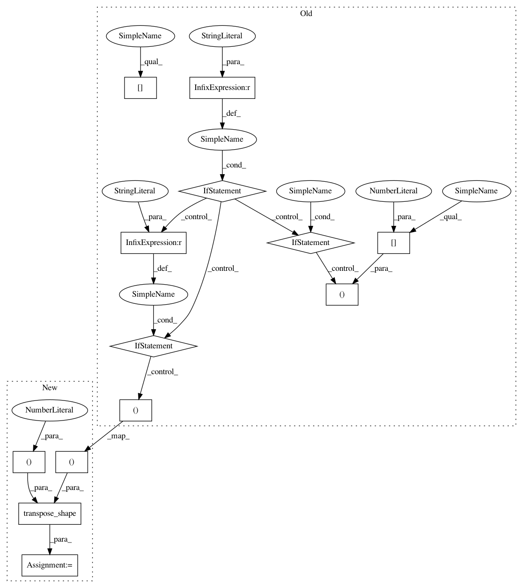

359e7627b46e850688c95cf6d1de48b77f9df901,keras/backend/tensorflow_backend.py,,bias_add,#Any#Any#Any#,3929
Before Change
raise ValueError("Unexpected bias dimensions %d, expect to be 1 or %d dimensions"
% (len(bias_shape), ndim(x)))
if ndim(x) == 5:
if data_format == "channels_first":
if len(bias_shape) == 1:
x += reshape(bias, (1, bias_shape[0], 1, 1, 1))
else:
x += reshape(bias, (1, bias_shape[3]) + bias_shape[:3])
elif data_format == "channels_last":
if len(bias_shape) == 1:
x += reshape(bias, (1, 1, 1, bias_shape[0]))
else:
x += reshape(bias, (1,) + bias_shape)
elif ndim(x) == 4:
if data_format == "channels_first":
if len(bias_shape) == 1:
if _has_nchw_support():
After Change
% (len(bias_shape), ndim(x)))
if ndim(x) == 5:
if len(bias_shape) == 1:
new_shape = (1, 1, 1, 1, bias_shape[0])
else:
new_shape = (1,) + bias_shape
new_shape = transpose_shape(new_shape, data_format, spatial_axes=(1, 2, 3))
x += reshape(bias, new_shape)
elif ndim(x) == 4:
if data_format == "channels_first":
if len(bias_shape) == 1:
In pattern: SUPERPATTERN
Frequency: 3
Non-data size: 13
Instances
Project Name: keras-team/keras
Commit Name: 359e7627b46e850688c95cf6d1de48b77f9df901
Time: 2018-08-08
Author: gabrieldemarmiesse@gmail.com
File Name: keras/backend/tensorflow_backend.py
Class Name:
Method Name: bias_add
Project Name: keras-team/keras
Commit Name: 359e7627b46e850688c95cf6d1de48b77f9df901
Time: 2018-08-08
Author: gabrieldemarmiesse@gmail.com
File Name: keras/backend/tensorflow_backend.py
Class Name:
Method Name: bias_add
Project Name: keras-team/keras
Commit Name: 1068e173eafd15e5aa9f40b9f73590a7f5be4a84
Time: 2018-08-05
Author: gabrieldemarmiesse@gmail.com
File Name: keras/layers/convolutional_recurrent.py
Class Name: ConvRNN2D
Method Name: compute_output_shape
Project Name: keras-team/keras
Commit Name: 672a873ffb344dfa030103cad69bdbc948184e8e
Time: 2018-08-08
Author: gabrieldemarmiesse@gmail.com
File Name: keras/backend/tensorflow_backend.py
Class Name:
Method Name: bias_add